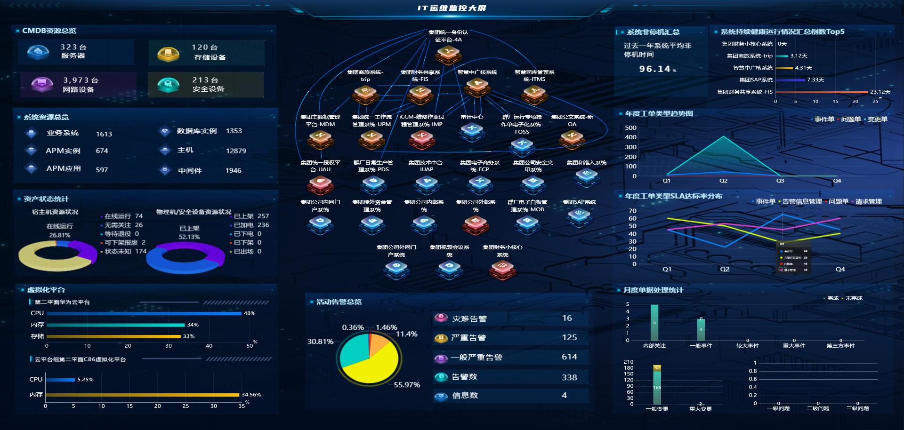

福建移动维保项目
该阶段主要沉淀蓝鲸平台使用、运维场景理解、需求梳理和项目协作经验，为后续在中广核现场承担插件开发、数据对接和问题排查打下基础。
查看福建移动工作梳理实习期自我评价与转正价值证明
在中广核智科2026年数智化运维管理平台建设项目中，围绕蓝鲸平台、CMDB、ITSM、APM、告警源插件和大屏数据源完成实际交付，形成从需求理解、接口联调、脚本开发到问题闭环的项目实践能力。
福建移动项目沉淀平台认知与运维场景理解，中广核项目进一步形成可见交付成果。
该阶段主要沉淀蓝鲸平台使用、运维场景理解、需求梳理和项目协作经验，为后续在中广核现场承担插件开发、数据对接和问题排查打下基础。
查看福建移动工作梳理支撑 IT 运维管理大屏展示 CMDB、ITSM、健康状态、告警等指标。
3类听云apm数据，支持从三方系统获取数据并自动录入 CMDB。
修复唯一性判断逻辑后，减少人工录入和数据维护成本。
围绕 CMDB 与听云同步关系，定位并推动 1 类核心关联关系闭环。
插件开发、数据对接、自动化维护和现场问题排查
完成插件修改，新增指标信息功能，使用户可以查看当前告警对应指标的历史数据，辅助告警分析和定位。
通过告警产生的业务 ID，关联近 30 天变更工单，为故障分析增加变更维度，提升排查线索完整性。
针对数据库、中间件资源完善自动发现逻辑，修复实例唯一性判断问题，推动资源录入自动化。
对接听云系统，录入 APM 实例，并将业务、APM 应用、APM 实例等关系同步至 CMDB。
通过 API 获取和数据库查询等方式开发 25+ 个数据源脚本/指标，支撑项目展示与运维态势呈现。
围绕 CMDB 拓扑关联缺失、接口字段不完整、实例无法匹配等问题进行排查，并形成处理方案。
从“人工维护”转向“脚本同步 + 周期执行 + 数据可视化”，提高交付效率和数据可靠性。
这些成果共同支撑了中广核项目中的 CMDB 数据质量、拓扑关系建设、IT 运维管理大屏展示和现场问题闭环。

支撑 CMDB 资源总览、系统健康状态、告警统计、工单趋势等指标集中展示，体现大屏数据源建设成果。
从平台熟悉、脚本开发、接口联调到现场沟通，逐步具备独立承担运维开发任务的基础。
继续强化蓝鲸平台底层、生产环境排障、插件规范沉淀和独立模块交付能力。
补强蓝鲸平台底层机制、平台部署能力、后台服务与日志排查方法。
整理告警源插件、配置发现插件、大屏数据源开发方法，形成可复用清单。
从需求沟通、方案设计、开发调试、上线验证到问题闭环完整承担一个模块。
继续积累 AIOps、CMDB、APM、ITSM、监控告警和自动化运维项目经验。